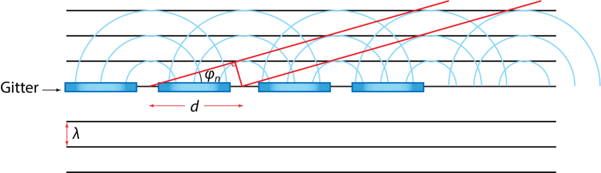

Lys og bølger
Konstruktion
Jacob Debel
Fysik C & B
Udledning af formler
Brydningsloven aka Snells lov
Hvad ved vi?
\begin{align*}
\boxed{\frac{\sin(i)}{\sin(b)} = n_{12}=\frac{n_2}{n_1} = \frac{v_1}{v_2}}
\end{align*}
Hvordan kommer vi derhen?
\begin{align*}
\Delta ABC: \sin (i) = \frac{3 \lambda_1}{\left| AB \right|} \\
\Delta ABD: \sin (b) = \frac{3 \lambda_2}{\left| AB \right|}
\end{align*}
Hvordan kommer vi derhen?
\begin{align*}
\frac{\Delta ABC}{\Delta ABD} : \frac{\sin (i)}{\sin (b)} &= \frac{\frac{3 \lambda_1}{\left| AB \right|}}{\frac{3\lambda_2}{\left| AB \right|}} \\
\frac{\sin (i)}{\sin (b)} &= \frac{\lambda_1}{\lambda_2}
\end{align*}
Hvordan kommer vi derhen?
\begin{align*}
\frac{\sin (i)}{\sin (b)} &= \frac{\lambda_1}{\lambda_2} \\
v_1 &= \lambda_1 \cdot f \\
v_2 &= \lambda_2 \cdot f \\
\frac{\sin (i)}{\sin (b)} &= \frac{v_1}{v_2}
\end{align*}
Hvordan kommer vi derhen?
\begin{align*}
\frac{\sin (i)}{\sin (b)} &= \frac{v_1}{v_2} \\
n_1 &= \frac{c}{v_1}\to v_1 = \frac{c}{n_1} \\
n_2 &= \frac{c}{v_2}\to v_2 = \frac{c}{n_2} \\
\frac{\sin (i)}{\sin (b)} &= \frac{\frac{c}{n_1}}{\frac{c}{n_2}} = \frac{n_2}{n_1}
\end{align*}
Gitterligningen
Hvad ved vi?

\begin{align*}
\boxed{\sin(\phi_n) = \frac{n \cdot \lambda}{d}}
\end{align*}
Hvordan kommer vi derhen?

\begin{align*}
\sin \left( \phi_n \right) = \frac{n \cdot \lambda}{d}
\end{align*}
Avancerede opgaver
- Nu skal der tænkes, mens der regnes!
- Arbejd med opgaverne i 41_konstruktion_opgaver.pdf.